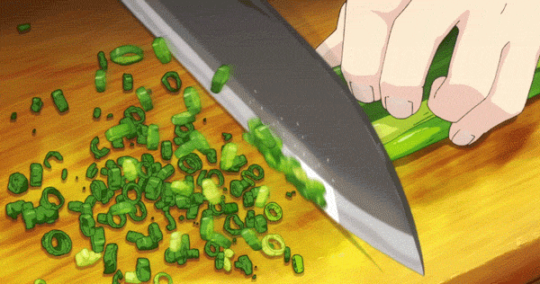

Step by step cooking borsh

- 1. Pour water into a saucepan, put the meat and turn on medium heat. Cook for about an hour.
- 2. Wash and peel the beets, carrots and onions. Grate the beets on a coarse grater and sprinkle with lemon juice. Thanks to this, the borscht will be really red.
Grate the carrots on a medium grater. Cut the onion into cubes.
- 3. Pour sunflower oil into a frying pan, turn on medium heat. First fry the onion and carrot (5 minutes), then add the beetroot.
- 4. Fry the vegetables for another 5 minutes. After that, add the tomato paste, stir and leave on the fire for another 5-7 minutes.
- 5. When the broth is cooked, remove the meat from it. While the meat is cooling, lower the chopped cabbage into the broth. After 5-10 minutes, add the potatoes cut into strips.
- 6. While the potatoes are cooking, separate the meat from the bone and cut into cubes. Return the meat to the soup.
Add the roast and stir.
- 7. Add the bay leaf and finely chopped herbs. Cover the pan with a lid and cook for another 5-7 minutes.
-
- 8. Serve the borscht hot with a spoonful of sour cream.